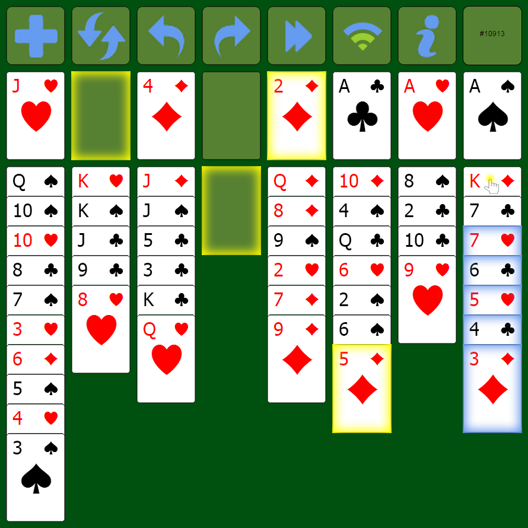

First, make a selection.
Notice I touched the top card of the last column and the program selected the 7H thru 3D because they are in sequence and alternating colors. The four legal moves are now highlighted in yellow, you can now:
Choose a destination.
Click anywhere in the freecells zone, not just the highlighted card, and the 3D will move to a freecell.
Click anywhere in the homecells zone and the 3D will go on top of the 2D.
Click anywhere in the 6-th column and the 4C and 3D will move to the 5D.
Click the empty column. If you pick this option two cards will be left behind because there are only enough freecells and empty cells to allow three cards to move. The remaining cards will be highlighted in purple for a brief period. You can always take back the move and select a different one.
Note:
Clicking anywhere in the same column as the selection will toggle the selection. Do this if you want to make a different selection.
Freecell Mobile
History
I enjoy the version of Freecell that comes with Windows 7 but when Windows 8 came out they abandoned it. Instead, they force you to go to their store and install a version of Freecell from there. No more game numbers and it doesn't autoplay. What a joke! I played it once.
I wanted a version that I could enjoy on Windows 8 and beyond and maybe a few devices as well. Freecell Mobile was the result. There is also a Freecell Solver version on Google Drive. Just download to your hard drive, unzip it and double-click the freecell.bat file. It will start-up a local webserver and open a browser to http://localhost:8080.
If you get into a position where you get stuck, you can ask the Solver to try and solve it by clicking the “i” button. If it finds a solution, you will see a hint where the gameno used to be in the top right corner. You can follow along or just click the forward button. If the solver couldn't find a solution, just back up a move or two and click the Solver again. If you just wanted one hint and want to continue on your own, then click the “i” button to turn off the hints. You can always click to solve again at a later time.
It will work on OS X but you need the java sdk, the jre is not enough. I have a sample freecell.command file but I don't have access to a mac to try it. Sorry. If you get it to work let me know what it needs.
It plays in portrait mode on my Nexus 7 in the Chrome browser just fine. If you zoom in, scroll down a little and then zoom out again, you can remove the address bar!
I hope you find this version of Freecell a joy to play.
freecell dot solver at gmail dot com